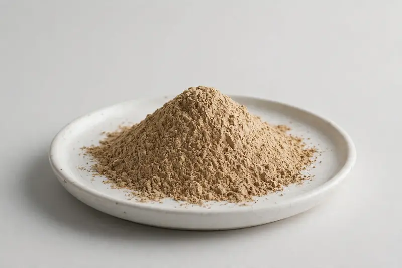

Star anise — Illicium verum fruit extract for flavor and confectionery development.

Overview
Star anise extract is derived from the fruit of Illicium verum, a key flavor material characterized by its anethole content and used widely in confectionery, beverage and savory applications. Food and flavor buyers request it on anethole-standardized grades or as concentrated flavor inputs. As a Xi'an trading company sourcing through partner producers, we confirm grade, format and documentation after receiving your target specification.
Specifications below reflect commonly requested options in the market — not a stock list. Share your target spec and we'll confirm exactly what we can supply, honestly.
| Specification | Details |
|---|---|
| Botanical identity | Star anise (Illicium verum) fruit extract powder |
| Marker compound | Commonly requested spec grades: anethole standardized grades (e.g. 80% to 90% anethole) and volatile-oil referenced options; actual specs confirmed on inquiry. |
| Appearance | Fine powder, color typical of the extract |
| Mesh size | Typically 80–100 mesh (confirm per inquiry) |
| Testing | COA/TDS arranged on request; scope agreed per your spec |
Applications
Documentation
We don't claim in-house labs or certifications we don't hold. COA and TDS documents can be arranged on request, and testing scope is agreed against your specification before supply.
FAQ
Related products
Diosmin (citrus-derived flavonoid)
Key marker: Diosmin 90%+
View specs →Phaseolus vulgaris
Key marker: Phaseolamin 1-2%
View specs →Morus alba
Key marker: DNJ 1%
View specs →Coriandrum sativum
Key marker: Linalool Grades
View specs →Sesamum indicum
Key marker: Sesamin Grades
View specs →Send your target spec and volumes — we'll respond with a tailored quotation.
Request a Quote